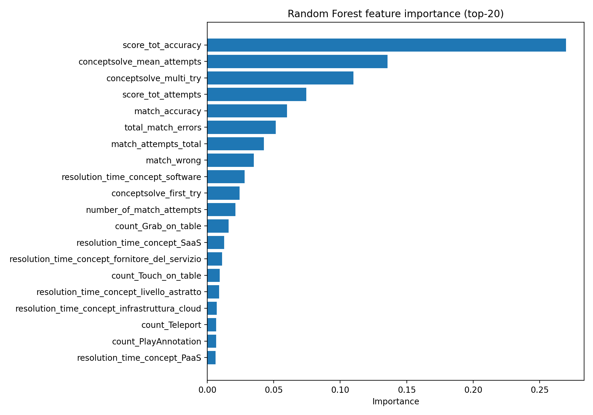

Input: WP4_D4.1_rev\pipeline_mode4\reference_outputs\Output_Mod4\Report\Mode4Features.csv
target n n_features r2 mse rmse score_percent 23 54 0.920043 13.120032 3.622158

Full importances: rf_feature_importance.csv
rf_feature_importance.csv